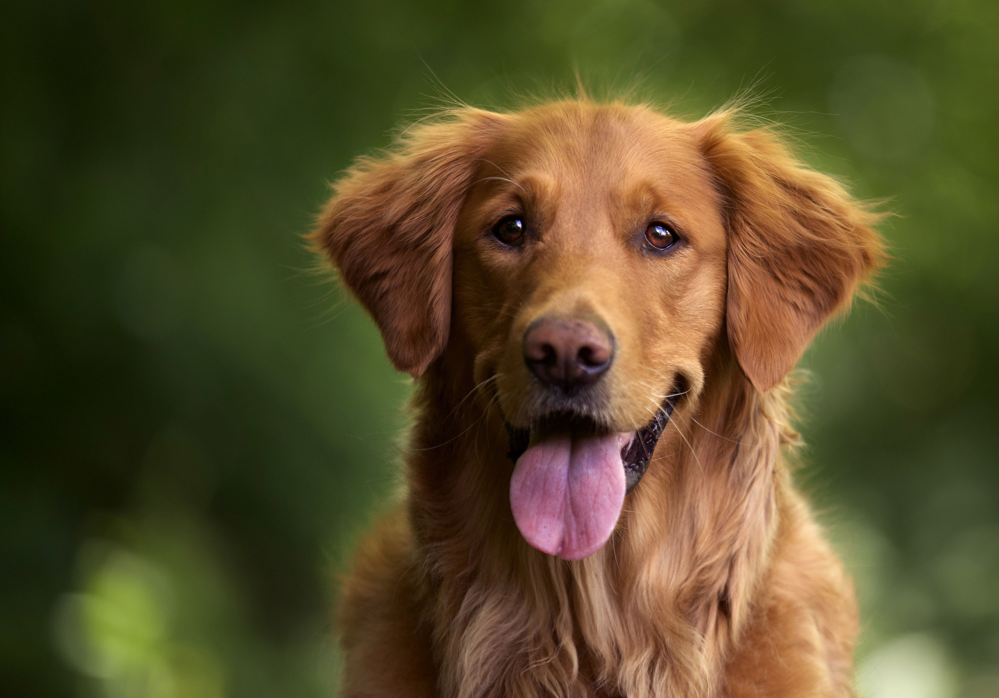
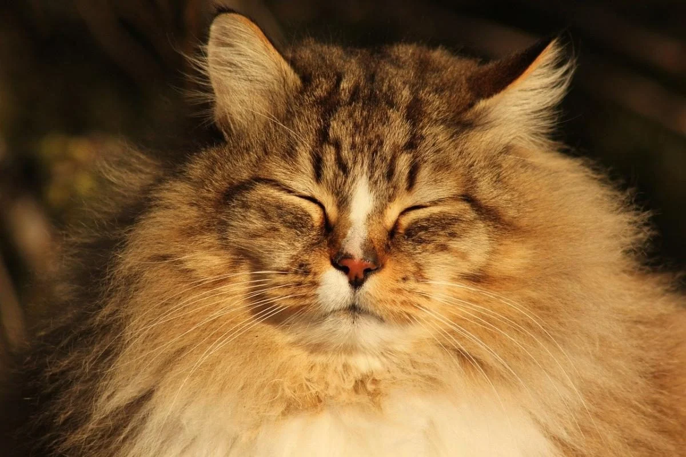

Що нового у притулку?
Притулок отримав нові вольєри та відвідав 12 нових тварин. Наші волонтери активно дбають про них щодня.
Тварини для усиновлення

Макс
6 років, спокійний та добрий

Мурчик
3 роки, лагідний та грайливий
Як допомогти
Волонтерство
Допомога в догляді за тваринами.
Пожертви
Фінансова підтримка притулку.
Корм та речі
Передача корму, іграшок, ковдр.
Поширені запитання
Як усиновити тварину?
Заповніть форму на сайті, ми зв’яжемося з вами.
Чи можна відвідати притулок?
Так! Щомісяця проводимо дні відкритих дверей.